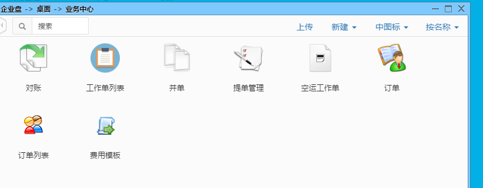
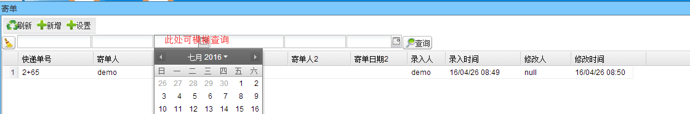
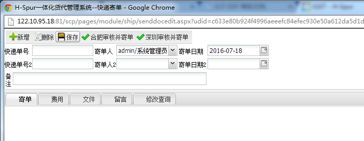
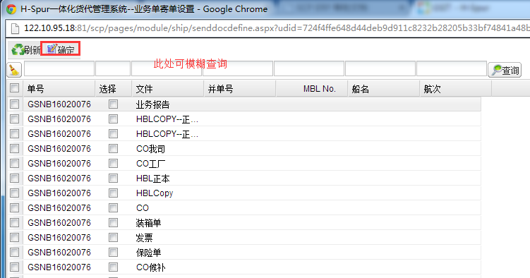

海运模块有寄单、工作单列表、并单、新建工作单、舱位、船期、订单、订单列表、订单审核子模块。
业务员接到客户的托运请求时，业务员给客服报价，客服建工作单，操作员在此页面录入工作单客户委人等信息，尽量录入完整资料以便后继工作的进行，录入完毕后点击“保存”按钮会保存工作单并自动按照“系统”→“编码规则管理”中的工作单生成规则自动生成工作单号（下拉框中的数据必须在相应的档案资料中提前录入)：
（注：如带有审核权限的角色打开本订单勾选“审核”后再保存订单，那么本订单将会锁定，即无法删除和修改数据。）
点击供寄单后弹出下图功能主界面

1.点击寄单进入页面：

2.点击新增可跳转至新增页面

3.点击设置可跳转至设置寄单设置页面
